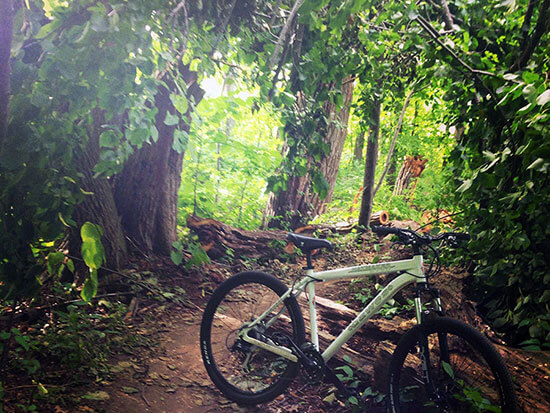
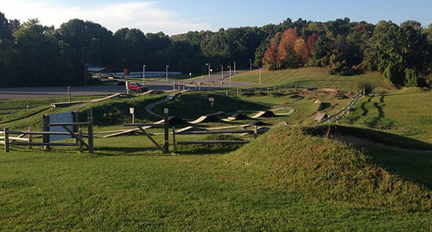

Trails at Dryer Road Park

Hiking & Biking Trails
Hike or bike on the many trails at Dryer Road Park. Check out this trail map for a map of all the excellent trails the park has to offer. With trails ranging from complete beginner to experienced pro, Dryer Road Park has a trail for everyone. Helmets are required for biking on trails!
Quick Details:
- Trail map above with trail details
- Each trail is maintained by the town of Victor and volunteers
- Leashed pets are allowed on trails, but watch out for bikers
- Trails range from beginner to expert
- Miles of trails will keep you busy for days!

Mountain Biking Skills Course
The narrow paths, wooden obstacles, jumps, slalom, pump track, bridges, etc. will put your biking skills to the test. Make sure to bring your helmet, as it is required for all mountain biking trails and the skills course.
Quick Details:
- Full slalom course
- Small and large dirt jumps
- Solid wood obstacles to test your skills
- Pump track to practice mountain biking fundamentals